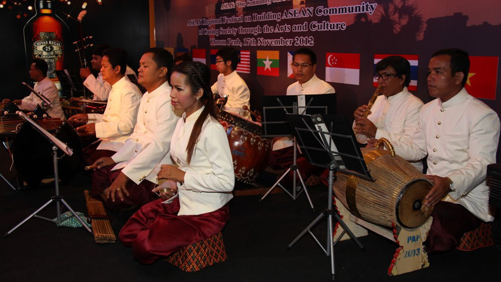
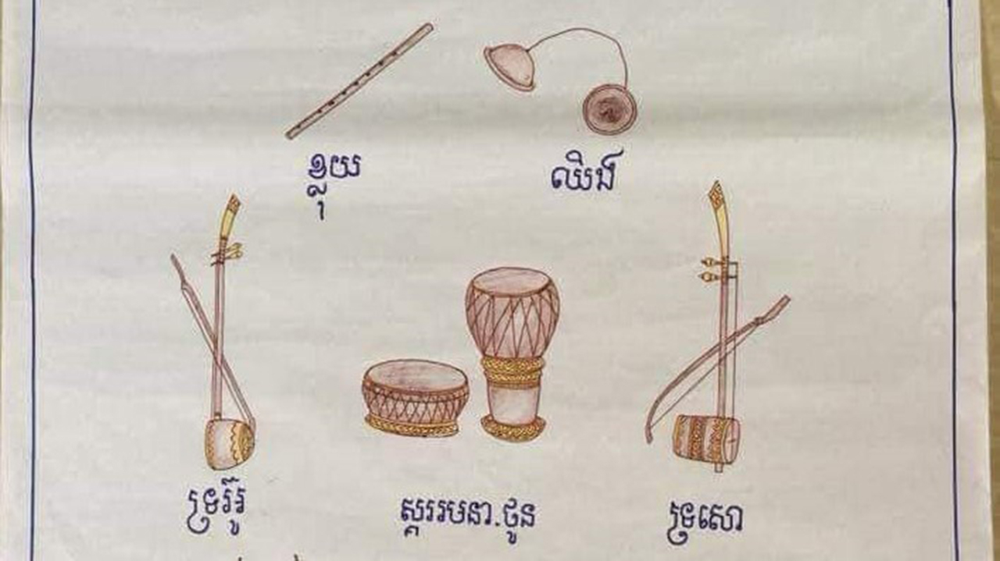
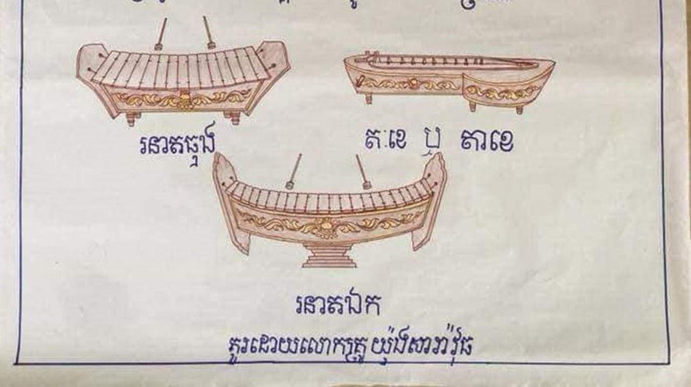
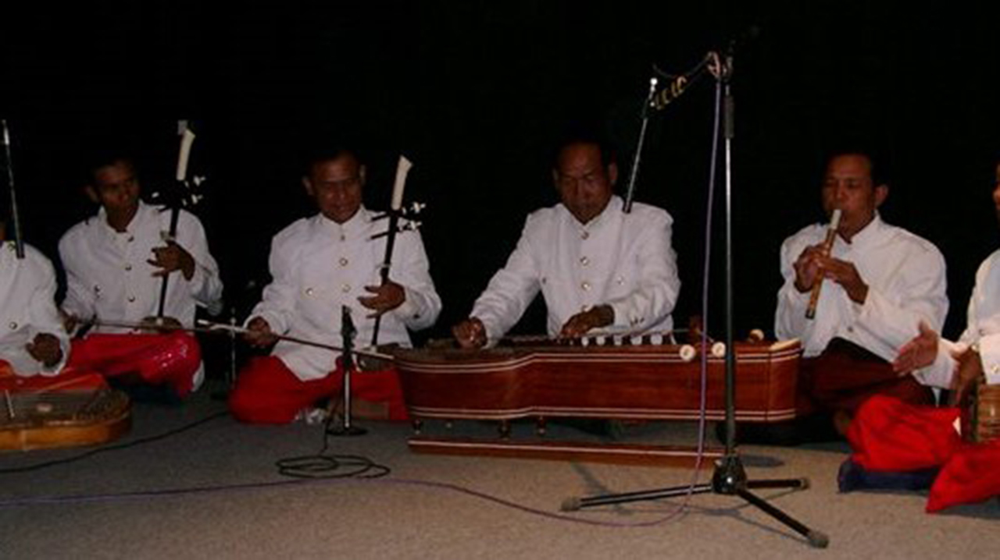
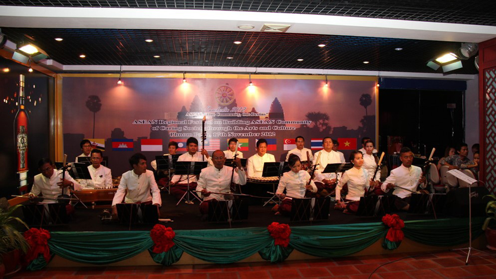

មហោរី អាចក្លាយមកពីពាក្យ មនោហារ គី មនោហារា(ប្រុស) មនោហារី(ស្រី) ដែលមានន័យថាគួរជាទីពេញចិត្ត ឬដែលមានលម្អគួរស្រឡាញ់មិនភ្លេច។ ដោយនិយាយសំដៅចំពោះតែតន្ត្រី ពាក្យនេះជាឈ្មោះហៅអ្នកបម្រើ នៅតាមប្រាសាទដែលមានភារកិច្ចលេងភ្លេង។ ម្យ៉ាងទៀតវង់តន្ត្រីនេះ នៅសម័យមុនយើងសង្កេតឃើញថា ភាគច្រើនគឺស្ត្រីជាអ្នកសម្តែង។ ទំនងជាយ៉ាងដូច្នេះហើយបានជាគេនិយមប្រើពាក្យ មហោរី។ ប្រភេទតន្ត្រីមហោរីមានសំឡេងស្រាល ទន់ភ្លន់ រណ្តំណែងណង បីដូចទឹករលក។ ភ្លេងនេះលាតត្រដាងនូវជីវិតពិតៗរបស់ខ្មែរ។ បទនីមួយៗសុទ្ធតែបម្រើក្នុងជីវិត ដូចជាចម្រៀងរៀបរាប់ពីសម្រស់ធម្មជាតិ ចម្រៀងក្នុងការងារ ចម្រៀងផ្តោះផ្តងស្នេហា ចម្រៀងម្តាយបំពេរកូនជាដើម។ ទំនុកច្រៀងមិនបាននឹកគិតដល់ជំនឿ និងសាសនាទេ តែគេអាចលេងកំដរនៅក្នុងពិធីនោះដែរ។ ម្យ៉ាងទៀតគេអាចលេងកំដរក្នុងពិធីផ្សេងៗ ជាពិសេសក្នុងពិធីជប់លៀង។
ឧបករណ៍សម្រាប់លេងក្នុងវង់ភ្លេងមហោរីមានប្រាំបួនមុខគឺ៖ រនាតឯក រនាតធុង តាខេ ខ្លុយ ទ្រអ៊ូ ទ្រដួង(ទ្រសោ) ទ្រឆេ ឈិង ស្គរថូនរមនា។ វង់ភ្លេងមហោរីនៅក្នុងព្រះរាជវាំងមានឈ្មោះពិសេសមួយហៅថា វង់ភ្លេងមហោរីព្រះរាជ្យទ្រព្យ ដោយមានបន្ថែមឧបករណ៍ច្រើនចម្រុះ រហូតដល់ដប់បួនមុខគឺ៖ រនាតឯក រនាតធុង គងវង៉ធំ គងវវង់តូច តាខេឯក តាខេធុង ខ្លុយ ចាប៉ីដងវែង ទ្រខ្មែរ ទ្រឆេ ក្រាប់ ឈិង ស្គរថូនរមនា។ គងវង់ដែលគេយកមកលេងបញ្ចូលនេះ គេត្រូវលេងបន្ថយសូរ ដោយប្រើអន្លូងរនាតនៃភ្លេងមហោរីរុំដោយកំណាត់ហើយឆ្លាក់អំបោះ។
ភ្លេងមហោរីនេះ គេក៏លេងក្នុងល្ខោនថ្មីមួយបែប ដែលទើបនឹងចាប់កំំណើតនៅពាក់កណ្ដាលសតវត្សទី២០ដែរ គឺគេយកបទភ្លេង និងចម្រៀងមហោរីធ្វើជាមូលដ្ឋាននៃការសម្ដែងសិល្បៈទំនើបរបស់ខ្លួន។ ល្ខោននេះមានអានុភាពលើប្រជារាស្ត្រ ហើយក្លាយជាសិល្បៈល្ខោនបន្តិចម្ដងៗ ហៅថា ល្ខោនមហោរី។ ក្នុងពេលអារ្យធម៌ពួកបស្ចឹមប្រទេសមានឥទ្ធិពលមកលើប្រជារាស្ត្រខ្មែរខ្លះៗនោះ វង់ភ្លេងមហោរីត្រូវគេកែច្នៃដោយបន្ថែមឧបករណ៍បរទេសខ្លះទៀតដែលមានសំឡេងស្រាលដូចជាឧបករណ៍បង់ហ្សូ មង់ដូលីនជាដើម។ ការប្រគំបែបនេះគេហៅថាវង់ភ្លេងមហោរី មកលេងកំដរក្នុងល្ខោនមួយបែបផ្សេងទៀតឈ្មោះ ប្រាមោទ្យទ័យ ឬ បាមោជ្ចទ័យ។ ល្ខោននេះបានទទួលឥទ្ធិពលពីខាងបស្ចិមប្រទេស ដែលមានលក្ខណៈជាអូបេរែត(Operette)។ ឯឧបករណ៍តន្ត្រីច្រើនយកផ្នែកខាងសាកល ហើយលាយបញ្ចូលឧបករណ៍តន្ត្រីបុរាណខ្មែរខ្លះ។


ការអប់រំ គឺជាការហ្វឹកហ្វឺននួវសក្តានុភាព ដែលជាគ្រឿងពង្រីកបណ្តុះ ឬ បង្កើនចំណេះវិជ្ជា ។ វប្បធម៌រលត់ ជាតិរលាយ វប្បធ៌មពណ្ណរាយជាតិថ្កុំថ្កើន ។
Copyright © Team o Nith